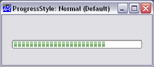
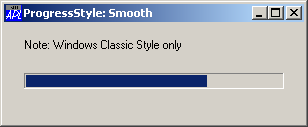
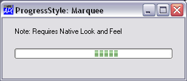

| Applies To: | ProgressBar |
Description
The ProgressStyle property specifies the appearance of a ProgressBar control.
ProgressStyle is a character vector that may be 'Normal', 'Smooth' or 'Marquee'. Its value is effective only when the object is created with ⎕WC. Changing ProgressStyle with ⎕WS has no effect on the appearance or behaviour of the ProgressBar.
If ProgressStyle is 'Normal', the highlight in the centre of the ProgressBar is displayed as a broken bar. This is the default.
If ProgressStyle is 'Smooth', the highlight in the centre of the ProgressBar is displayed as a solid block of colour. This style only applies if Windows Classic Theme is in use. If not, it will be as if 'Normal' were specified.
If ProgressStyle is 'Marquee', the highlight in the centre of the ProgressBar is displayed as a broken bar that moves continuously from left to right. The speed is controlled by the Interval Property which determines the frequency in milliseconds with which the highlight is redrawn, each time further along the ProgressBar. The special value of ¯1 causes the animation to stop.
Note that this feature only applies if Native Look and Feel is enabled. If not, 'Marquee' will produce the same behaviour as 'Normal'.
The pictures below illustrate the appearance of the different values of ProgressStyle.

ProgressStyle Normal (the default)

ProgressStyle Smooth (Windows Classic Theme only)

ProgressStyle Marquee (requires Native Look and Feel)